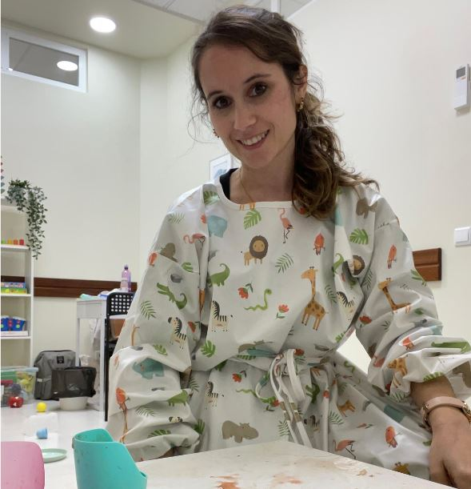
“Mastigar, engolir e comer: o que é esperado para cada idade?”
Margarida Ravara | Terapeuta da Fala, especializada em perturbações alimentares pediátricas
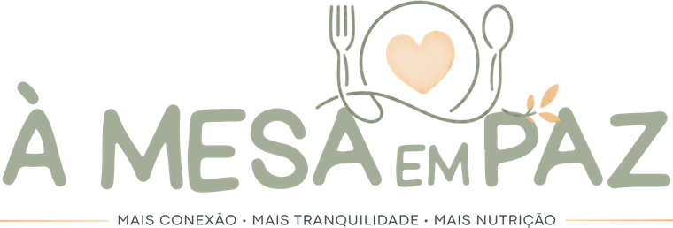
Crianças seletivas · dos 2 aos 6 anosO programa que te ajuda a perceber porquê que o teu filho não come, a reduzir o stress às refeições e a ajudá-lo a aproximar-se dos alimentos com mais confiança.
Quero fazer parteInício a 4 de novembro de 2026
Vê se te reconheces — e onde este programa faz (ou não) sentido para a tua família.
As refeições deixassem de ser uma fonte de stress e voltassem a ser um momento tranquilo em família.
Soubesses interpretar melhor os sinais do teu filho(a), em vez de viver em tentativa e erro.
Aprendesses a ajudá-lo sem recorrer à pressão, chantagens, negociações ou distrações.
Deixasses de sentir culpa e preocupação sempre que ele(a) recusa um alimento.
Soubesses como garantir os nutrientes essenciais de que o teu filho precisa, mesmo quando recusa alguns alimentos ou grupos alimentares inteiros.
Conseguisses perceber o que é esperado para a idade dele e aquilo que merece uma atenção mais especializada.
Deixasses de procurar mais truques e dicas na internet porque finalmente tens um caminho claro.
Ganhasses confiança para tomar decisões informadas, sem viver entre opiniões contraditórias.
É exatamente isso que queremos construir no
Programa À Mesa em Paz.
O caminho que vais percorrer para transformar as refeições:
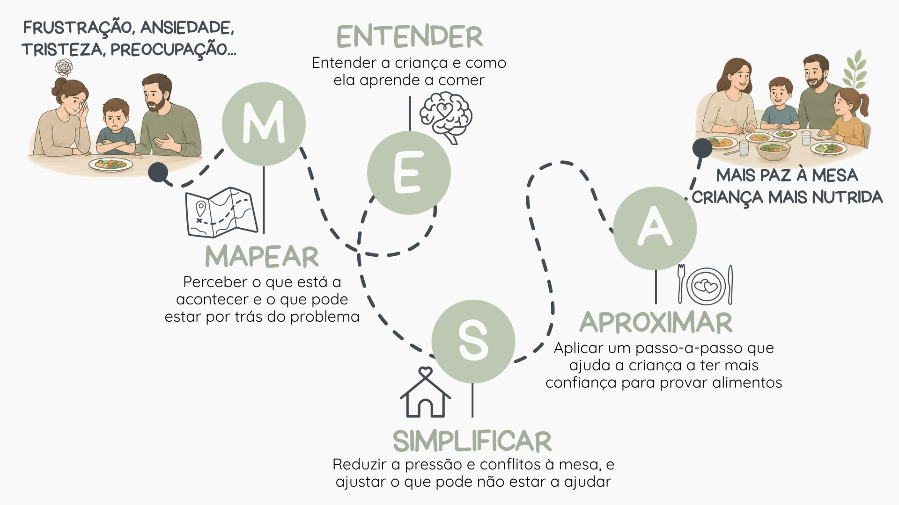
As refeições não precisam de
continuar a ser uma luta.
Se continuares a fazer o que tens feito até agora, é provável que a frustração continue igual. Mas se tiveres um caminho claro, apoio profissional e estratégias adequadas à realidade do teu filho, as coisas podem começar a mudar.
Não da noite para o dia. Mas passo a passo.
É isso que vamos trabalhar neste programa, enquanto garantimos que o teu filho recebe os nutrientes que precisa.
Um caminho pensado passo a passo — do acolhimento à aproximação da criança aos alimentos, no vosso ritmo.
Deixo de olhar para a recusa alimentar do meu filho como uma falha minha ou da criança e começo a perceber que existe um caminho.
Aprendo a fortificar a alimentação do meu filho de acordo com os alimentos que não come e a identificar situações que exigem maior atenção.
Consigo entender o que é esperado, o que precisa de estratégia e o que exige avaliação individual.
Compreendo o que está por detrás da recusa alimentar e aprendo a responder com mais segurança e menos conflito.
Percebo como a dinâmica familiar pode alimentar o problema ou ajudar a resolvê-lo, e começo a criar um ambiente às refeições mais previsível e menos tenso.
Deixo de tentar convencer o meu filho a comer e passo a criar oportunidades seguras para ele se aproximar dos alimentos.
tens ainda acesso a:
Não estarás sozinha(o) nesta jornada. Terás acesso a uma comunidade de famílias com os mesmos desafios, para partilhas e apoio diário, e terás sempre o acompanhamento da nutricionista para ajudar nas dúvidas do dia-a-dia, num ambiente acolhedor, sem julgamentos nem fundamentalismos.
Antes de cada sessão será enviado um formulário para escreveres as tuas dúvidas, situação ou o que te está a preocupar mais.
Nota: as sessões ao vivo respondem às questões mais comuns e não substituem consulta de nutrição pediátrica individualizada.
Terás acesso a materiais de apoio, conteúdos complementares e ferramentas para aplicares em tua casa o que aprendes em cada módulo.
Para veres e reveres sempre que sentires necessidade.

Margarida Ravara | Terapeuta da Fala, especializada em perturbações alimentares pediátricas
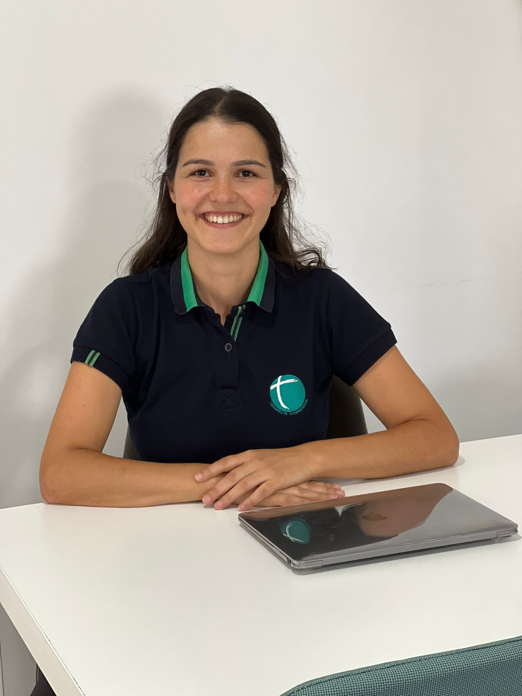
Bruna Soares | Terapeuta Ocupacional, Pós-Graduada em Integração Sensorial, com formação especializada em recusa e seletividade alimentar da criança
E ainda recebes vários recursos práticos para usares no dia-a-dia
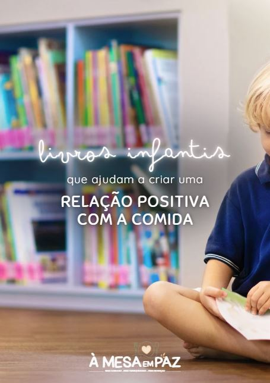
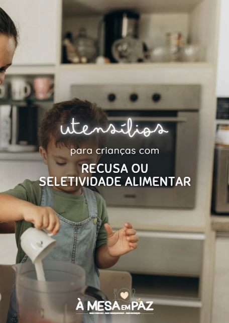
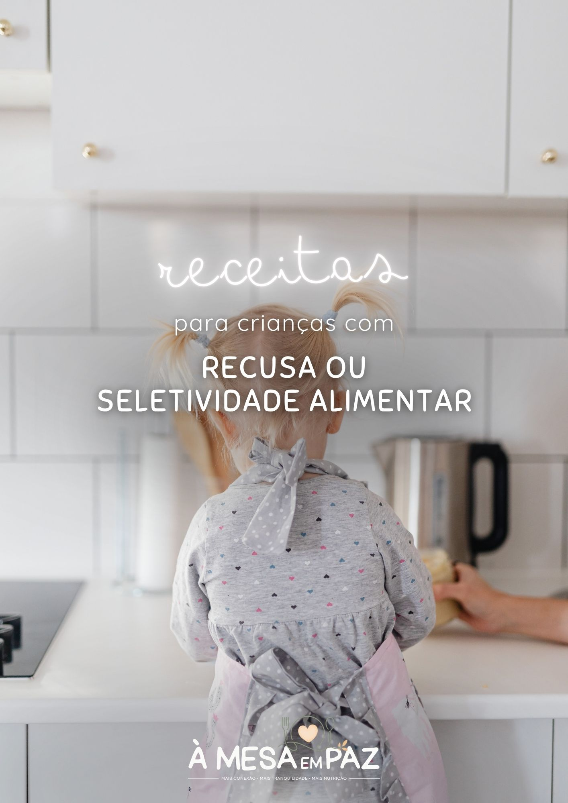
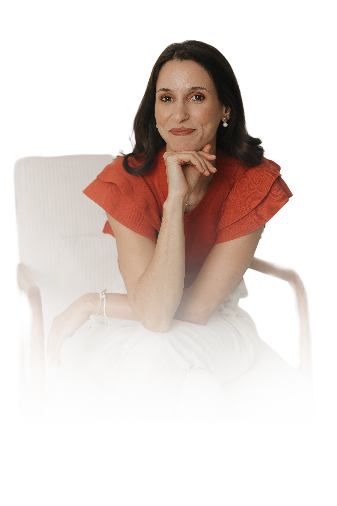
Pagamento seguro · Início a 4 novembro 2026 · Suporte por WhatsApp
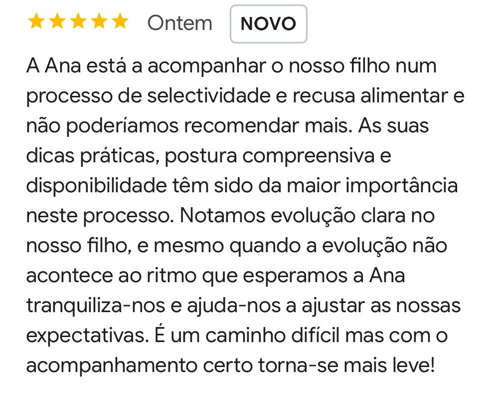
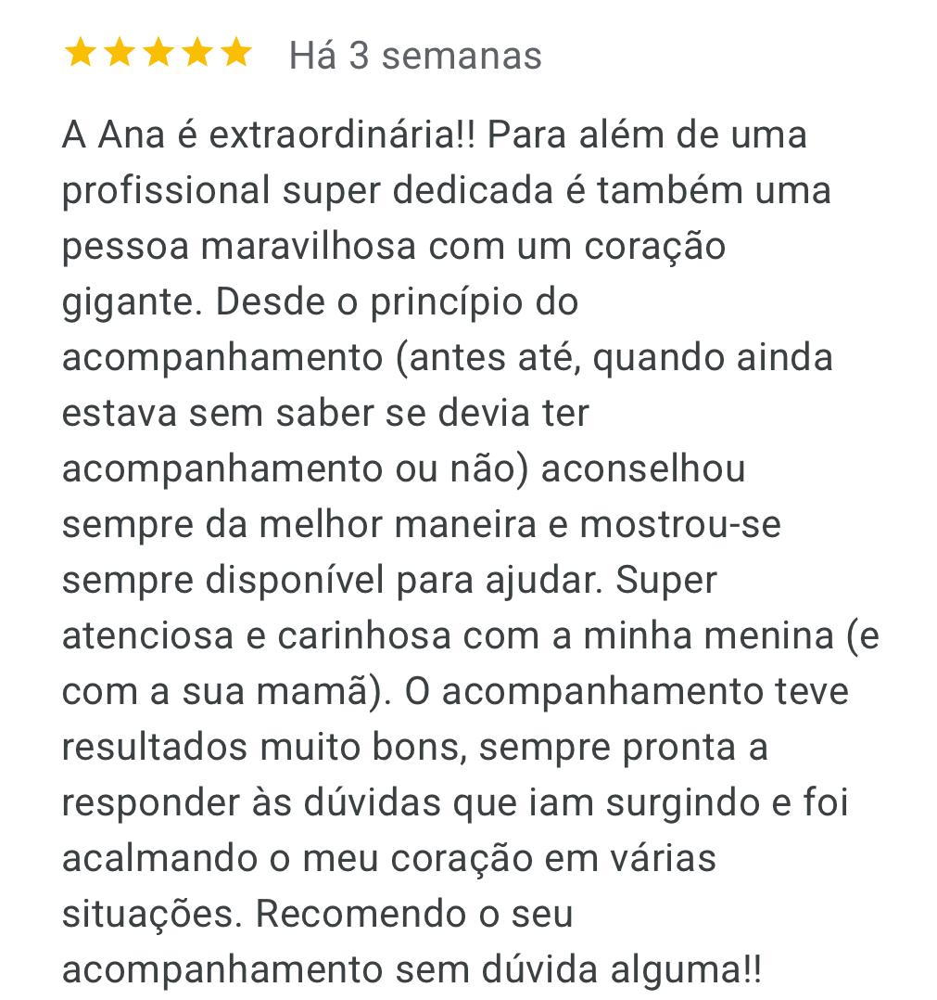
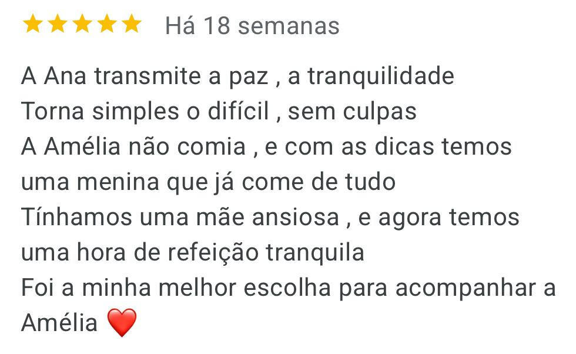
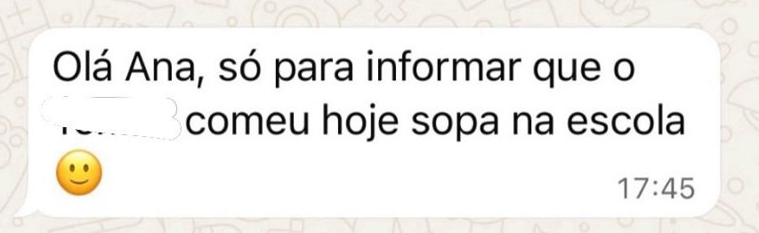
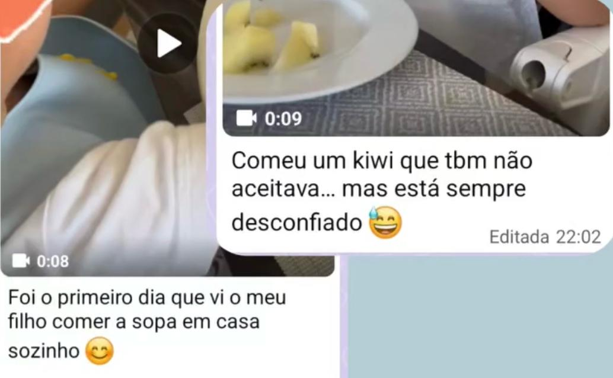
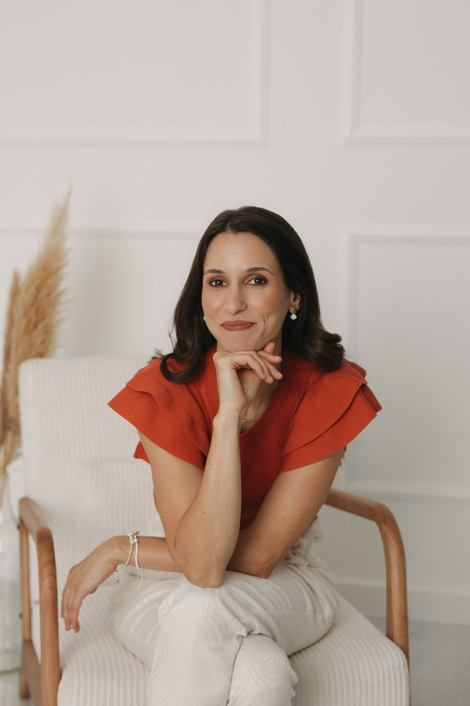
Sou Nutricionista Pediátrica (2069N), mãe de duas crianças e, antes de tudo isto, fui uma criança seletiva. Daquelas que fugia da mesa, demorava uma eternidade a comer, e que ainda hoje se lembra da ansiedade que sentia perante algumas refeições. Talvez por isso este tema me seja tão próximo.
Cresci e, meio que por acaso, a nutrição escolheu-me. Sou Nutricionista há 13 anos, Pós-Graduada em Nutrição Pediátrica e Escolar, Profissional de Saúde Neurocompatível® e tenho formação na Get Permission Approach®, uma abordagem internacional para crianças com recusa e seletividade alimentar, que procura compreender a criança antes de intervir, ajudando as famílias a construir refeições mais tranquilas e positivas.
Acompanho diariamente famílias que vivem exatamente aquilo que talvez estejas a viver agora: preocupação, frustração e a sensação de não saber o que fazer para ajudar o filho a comer. E compreendo bem esta realidade: eu própria já passei (e continuo a passar) por desafios com a alimentação dos meus filhos.
Foi por isso que criei o Programa À Mesa em Paz. Porque acredito que as refeições devem ser momentos de encontro, partilha, ligação e nutrição — e não uma fonte constante de stress e conflito.
Não. Os conteúdos principais do programa são gravados e podem ser vistos quando te for mais conveniente. As Masterclasses com as especialistas são em direto, mas ficarão gravadas para que possas assistir posteriormente, caso não consigas estar em direto. Apenas as sessões mensais de dúvidas não ficam gravadas, de forma a garantir a privacidade e a confidencialidade das famílias que participam e partilham as suas experiências.
Sim. Aliás, esta é uma das situações mais comuns. Muitos pais chegam-me cansados, frustrados e carregados de culpa. Já insistiram, pressionaram, fizeram promessas, distraíram com desenhos animados ou prepararam várias refeições diferentes porque estavam desesperados por ver os filhos comer.
A verdade é que, quando vemos um filho a comer muito pouco, é natural que tentemos fazer tudo o que está ao nosso alcance. Neste programa não vais encontrar julgamentos. Vais encontrar informação, orientação e um espaço seguro para aprender novas formas de lidar com estas situações. E também uma comunidade com famílias com os mesmos desafios que tu.
A culpa não ajuda a resolver o problema. O conhecimento e o apoio certo sim.
Sim. Idealmente todos os adultos envolvidos estariam alinhados, mas a realidade nem sempre é essa. Mesmo quando apenas um dos cuidadores começa a mudar a forma como comunica e gere as refeições, é possível criar mudanças importantes.
Além disso, ao compreenderes melhor o que está a acontecer e os motivos por detrás das estratégias propostas, será mais fácil explicares o processo aos restantes familiares e envolvê-los gradualmente.
Não. Seria pouco honesto fazer essa promessa. Cada criança tem a sua história alimentar, as suas características individuais e o seu próprio ritmo.
Aquilo que posso garantir é que vais aprender a criar condições mais favoráveis para a aprendizagem alimentar e para a aproximação aos alimentos, bem como garantir que a criança recebe os nutrientes que pode ter em falta devido à sua recusa alimentar.
Os resultados dependem de muitos fatores, incluindo o ponto de partida da criança, a existência de outras dificuldades associadas e, sobretudo, o grau de compromisso da família com a implementação das estratégias. Quanto maior for o envolvimento da família na aplicação prática dos conteúdos, maior tende a ser o potencial de mudança.
Sim. Antes de qualquer diagnóstico, estamos a falar de uma criança. E muitos dos princípios fundamentais da alimentação infantil continuam a ser importantes independentemente da existência de uma condição do neurodesenvolvimento.
Ao longo do programa encontrarás também conteúdos específicos relacionados com crianças neurodivergentes, incluindo algumas adaptações e desafios mais frequentes nestas situações. No entanto, dependendo das necessidades da criança, este programa poderá complementar — mas não substituir — o acompanhamento individualizado por outros profissionais.
Não necessariamente. O Programa À Mesa em Paz foi criado para ajudar famílias que lidam com dificuldades alimentares na infância e vai dar-te ferramentas muito práticas para aplicares no dia a dia.
Ao longo do programa vais aprender a perceber melhor o que está por detrás das dificuldades alimentares do teu filho, a identificar alguns sinais que podem justificar uma avaliação mais individualizada e a compreender quando faz sentido procurar apoio adicional.
Além disso, terás acesso a masterclasses com outros profissionais que trabalham frequentemente com crianças com dificuldades alimentares, incluindo uma Terapeuta Ocupacional e uma Terapeuta da Fala. O objetivo é que compreendas melhor o papel de cada profissional e saibas quando e como cada intervenção pode ajudar o teu filho.
Quando existe necessidade de acompanhamento por outros profissionais, o programa não o substitui — complementa-o, ajudando-te a compreender melhor o processo e a aplicar estratégias no dia a dia da tua família.
Sim, faz todo o sentido. O Programa À Mesa em Paz não substitui esse acompanhamento. Complementa-o. Enquanto as terapias trabalham objetivos específicos, este programa ajuda-te a perceber melhor a recusa alimentar da tua criança e como aplicar estratégias no dia a dia da tua família, durante as refeições reais que acontecem em casa.
Muitas vezes os pais já estão a trabalhar estas questões com outros profissionais, mas continuam com uma preocupação muito legítima: "Enquanto estamos neste processo, será que lhe faltam nutrientes importantes?"
Ao longo do programa vais aprender também a olhar para esta questão com mais segurança e a perceber como garantir uma alimentação nutricionalmente adequada dentro da realidade atual do teu filho.
O programa foi pensado para famílias reais, com rotinas exigentes. As aulas são objetivas, práticas e podem ser vistas ao teu ritmo.
Mas é importante ser transparente: ver os conteúdos não é suficiente. Para que existam mudanças, é necessário implementar aquilo que vais aprendendo e experimentar novas formas de lidar com as refeições.
Não precisas de fazer tudo de uma vez nem de ser perfeita(o). Mas precisas de estar disponível para dar pequenos passos consistentes ao longo do tempo. É esse compromisso que cria os resultados.
Após os 3 meses terminam o acompanhamento em comunidade e as sessões de dúvidas incluídas no programa. No entanto, terás acesso aos conteúdos gravados durante 12 meses, para reveres sempre que precisares e continuares a aplicar as estratégias a longo prazo.
Sim. Embora o programa não seja exclusivo para crianças que comem apenas 5 ou 6 alimentos, muitas famílias nessa situação encontram nele um apoio importante. Quando uma criança aceita um número muito reduzido de alimentos, é natural que os pais se sintam preocupados e sem saber o que fazer.
Ao longo do programa vais aprender a perceber melhor o que pode estar por detrás dessa dificuldade e como ajudar o teu filho a aumentar gradualmente o seu repertório alimentar, de forma respeitosa e sem pressão.
Em muitos destes casos, pode também ser necessário um acompanhamento individualizado em consulta. Isto porque algumas crianças não conseguem atingir as suas necessidades nutricionais apenas através da alimentação e, enquanto trabalhamos para aumentar a aceitação alimentar, pode ser necessário avaliar a necessidade de suplementação de alguns nutrientes. Essa avaliação deve ser sempre feita de forma individualizada.
O programa dá-te as bases para compreenderes o processo, aplicares estratégias no dia a dia e tirares maior partido de um eventual acompanhamento em consulta.
Sim. Nunca é tarde para melhorar a relação de uma criança com a comida. No entanto, é importante ser realista: quando a dificuldade alimentar já existe há vários anos, normalmente também já existem hábitos, rotinas e emoções muito enraizados, tanto na criança como na família.
Isso significa que o processo pode exigir mais tempo, mais consistência e mais paciência do que numa criança em que as dificuldades surgiram mais recentemente. Mas difícil não significa impossível. Com as estratégias adequadas e o envolvimento da família, é possível criar mudanças importantes, reduzir conflitos à mesa e ajudar a criança a desenvolver uma relação mais positiva com a comida.
Envia-me um e-mail para ola@entrepapasefrutas.pt ou uma mensagem no WhatsApp.
Quando tentas estratégias soltas, que não estão adaptadas à tua criança e à fase alimentar em que se encontra, é normal não teres resultados. Os resultados aparecem quando entendes o porquê da recusa do teu filho, sabes como falar com ele e como guiar as situações de recusa e tens um caminho claro e prático para o aproximar aos alimentos que está a recusar.
Quero fazer parte